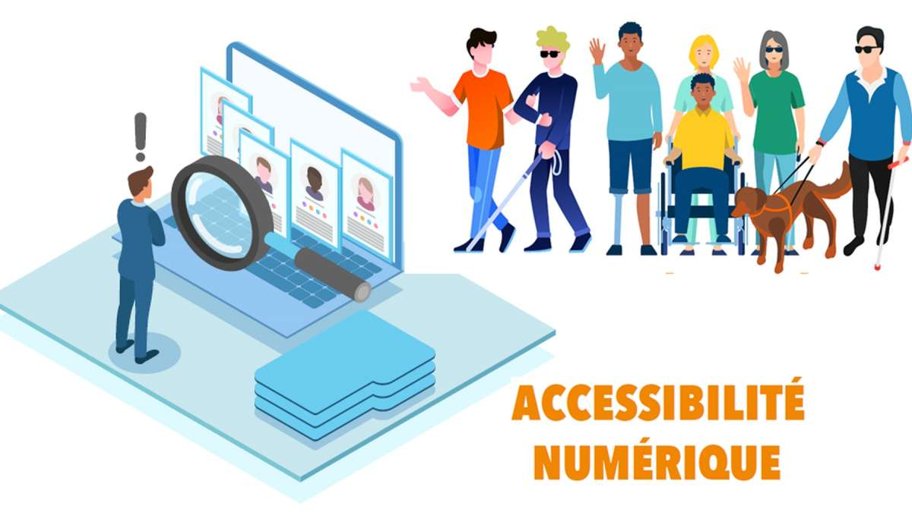

Créer un Internet Accessible à Tous
Dans cet article, nous explorons l'importance de rendre le web accessible à tous les utilisateurs, indépendamment de leurs capacités. Découvrez comment améliorer l'expérience en ligne pour chacun.
Voir l'article et ses commentaires
Développement d'un Site Web Accessible
Cet article détaille les étapes pratiques pour intégrer l'accessibilité dans le processus de développement d'un site web, y compris l'utilisation de technologies assistives et les bonnes pratiques de codage.
Voir l'article et ses commentaires
Concevoir des Applications Mobiles Accessibles
Cet article explore les meilleures pratiques pour concevoir des applications mobiles accessibles, en mettant l'accent sur l'expérience utilisateur pour les utilisateurs ayant des besoins spécifiques.
Voir l'article et ses commentaires
L'Impact de l'Accessibilité sur le Commerce en Ligne
Découvrez comment l'accessibilité peut influencer positivement le commerce en ligne en élargissant la portée du public et en améliorant la satisfaction client.
Voir l'article et ses commentaires

Les Innovations Récentes en Matière d'Accessibilité
Cet article met en lumière les dernières innovations technologiques visant à rendre le monde numérique plus accessible, de l'IA aux outils de navigation avancés.
Voir l'article et ses commentaires